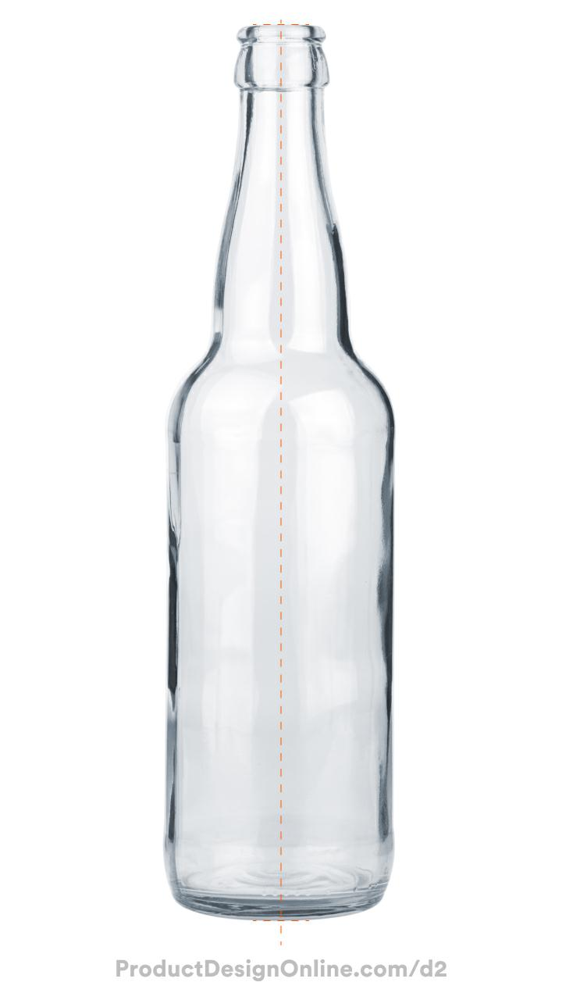

<div class="textcontainer">
<p class="margin"> </p>
<h3>Week 2: 2D Design & Cutting</h3>
<p class="margin"> </p>
<div class="flexrow">
<a id="btn" href="./temp.zip" download>Test Download Button
</a>
</div>
<p class="margin"> </p>
<h4>Assignment 1: Make a Box + Vinyl Sticker</h4>
<h4>Assignment 2: Fusion 360 Tutorial</h4>
<p class = "margin">
I followed this tutorial (https://www.youtube.com/watch?v=DfAfxae8aRc) to learn how to make a CAD design of a glass bottle. From the tutorial, I downloaded this image as my reference for the bottle shape:
</p>
<p></p>
<p class = "margin">
Through this I learned skills such as importing images into Fusion360 to use as references for tracing, and how to also how to use the Revolve and Shell tools.
</p>
<img width = "100" src="./BottleCAD.jpg" alt="placeholder for you about me image">
<h4>Assignment 3: Fusion Modeling</h4>
</div>